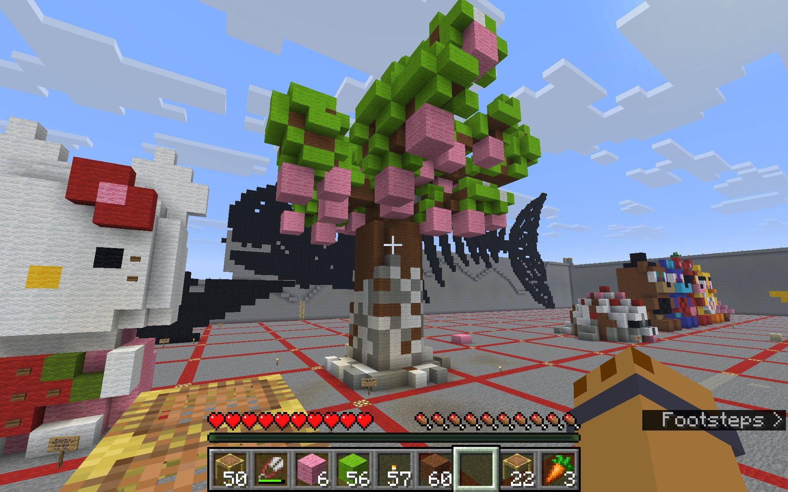

Art made in Minecraft has its own appeal. Despite being confined to blocks, Minecraft builds can still be used to make recognizable shapes, objects, characters, etc.
In my youth, there used to be a small grove of peach trees where I lived. I was inspired by the shape that trees take when fully grown and wanted to challenge myself to build something like it in Minecraft.
